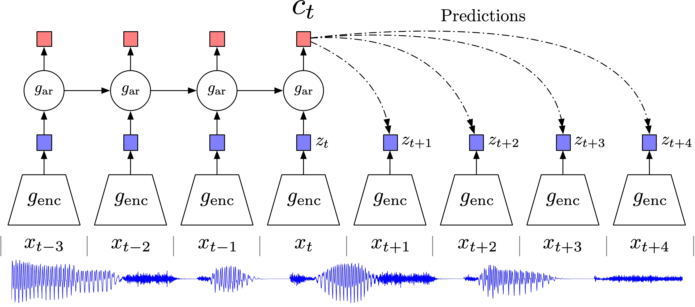
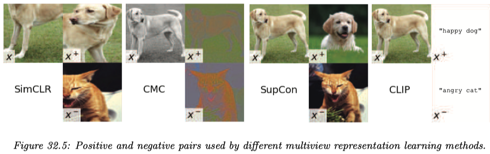

カーネル法の概観
半正定値カーネルから距離学習まで
2024-08-10
A Blog Entry on Bayesian Computation by an Applied Mathematician
$$
$$
極めて高精度な分類器が完成してすぐのころ，分類タスクが極めて上手なニューラルネットワークは他の下流タスクでも良い成績が観察され，最初に考えられた方法が１であった（距離学習でも同様）．
一方でこのスキームではすぐにドメインシフトと転移学習が問題になった．
これを克服するのが２の方法である．高精度なデータを生成できる深層潜在模型が学習された場合，その潜在変数は現実の何らかの表象になっているだろう，というアイデアは analysis-by-synthesis (Roberts, 1963), (Lee and Mumford, 2003) とも呼ばれている．
この方法は，文字のストローク（トメ，ハネ）が集まった構造に注目するなど，データの生成過程がある程度明らかなものでは特に性能が良い (Lake et al., 2015)．
\(\beta\)-VAE (Higgins et al., 2017) や BiGAN (Donahue et al., 2017) はその例であるが，ImageNet などの大規模データに対する分類や分割のタスクで十分な性能はまだ見られていないという．
２よりも表現学習として良い性質を持つのが３である．
生成のためには大変多くの特徴量が必要であるが，下流タスクに重要なのはその一部のみに限る．このような場合，Denoising Autoencoder (Vincent et al., 2008) のように「データにノイズを印加してこれを戻すのに必要な知識は何か？」を問うことが極めて普遍的な力を持つ．
雑音除去と同様に，表現学習に極めて有効なタスクがマスク除去 (Devlin et al., 2019) である．これは画像領域にも応用されている：BEiT (Bao et al., 2022)．masked autoencoder (He et al., 2022) が現在の state of the art であるようである．
ノイズ対照学習に基づいた方法が第４勢力として登場（再興）してきている．multiview representation learning とも呼ばれる．
この方法では，雑音やマスク除去とは違った方法で，「真のデータをノイズと見分ける」という予測問題として表現学習を解く．1
この方法は最初自然言語処理で大きな成功を収めた (Mnih and Kavukcuoglu, 2013)．例えば word2vec (Mikolov, Chen, et al., 2013), (Mikolov, Sutskever, et al., 2013) も NCL に基づく．
一方で前述の通り，BART や GPT などの現代の言語モデルは，ノイズ対照の先へ行き，デノイジングやデマスキングによる表現学習を行っている．
しかし NCL には，雑音・マスク除去と違い，ある程度どのようなデータを「似ている」とするかの制御が効くという美点がある．これを 距離学習 ともいう．2
発展した対照学習法，例えば CPC (Contrastive Predictive Coding) (Oord et al., 2019) は，言語，音声，画像，３次元空間での強化学習など，多くの領域で有力な代替を提供するようである．
また CLIP (Radford et al., 2019) では，データのモーダリティを超えて，言語と画像の関係について大規模に事前学習をさせることが可能になっている．

まずエンコーダー \(z_t=g_{\text{enc}}(x_t)\) を作る．続いて，自己回帰モデル \(g_{\text{ar}}\) を用いて \(z_{1:t}\) を要約して予測しようとする．
この段階で潜在表現 \(c_t=g_{\text{ar}}(z_{1:t})\) が作られることを期待するのであるが，直接 \(p(x|c)\) を予測しようとしてしまうと，必ずしも有用な潜在表現 \(c\) が得られるとは限らない．
そこで，距離 \(k\) だけ離れたデータ \(x_{t+k}\) の尤度比 \[ f_k(x_{t+k},c_t)\,\propto\,\frac{p(x_{t+k}|c_t)}{p(x_{t+k})} \] を， \[ f_k(x_{t+k},c_t)=\exp\left(z_{t+k}^\top W_kc_t\right) \] の形で予測しようとし，この荷重 \(W_k\) の推定を考える．
これは，表現学習においては予測 \(p(x|c)\) が至上命題であるわけではなく，\(x\) と \(c\) の相互情報量が近ければ十分であるために用意された，表現学習のための代理目標（InfoMax (Linsker, 1988) ともいう）であり，InfoNCE 損失 または \(n\)-ペア損失 (Sohn, 2016) とも呼ばれる．3
このモデルに対しては，GAN 様の敵対的生成であるノイズ対照学習の損失を用いることができる．(Oord et al., 2019) では，エンコーダとして残差接続を持つ strided convolutional layer が，自己回帰モデルとして GRU (Gated Recurrent Unit) (Cho et al., 2014) という RNN の変種が使われている．
こうして推定された \((z_t,c_t)\) は，\(x_{1:t}\) までのヒストリを見た要約が欲しい場合は \(c_t\) を，そうでない場合は \(z_t\) を，データ \(x_t\) の潜在表現として使える．
ノイズ対照学習に基づくアプローチの美点は，別のモーダリティを持つデータを統合しやすい点にある．
これを用いて，言語と画像の関係について大規模に事前学習をさせたのが OpenAI の CLIP (Radford et al., 2019) である．

対照学習による深層距離学習において重要なのは，正のノイズと負のノイズを各サンプル \(x\) に対してどう作るか？である (Tian, Sun, et al., 2020)．
SimCLR (Chen et al., 2020) は，\(x\) に対する変換（ランダムなトリミング，リサイズ，並行移動など）を学習し，データ拡張によって正のノイズと負のノイズを作る．
CMC (Contrastive Multiple Coding) (Tian, Krishnan, et al., 2020) は，\(x\) の輝度 (luma) と彩度 (chroma) を取り出して正のノイズと負のノイズとする．
SupCon (Supervised Contrastive Learning) (Khosla et al., 2020) は画像に対するラベルングが得られるとき，これを教師的に用いて正のノイズと負のノイズを作る．これは 近傍成分分析 (NCA) (Goldberger et al., 2004) と対照学習を組み合わせた発想であり，実際後続の分類タスクがうまく，ロバストになるという．
Vision Transformer (ViT) で用いられる DINO (Self-Distilation with no Labels) (Caron et al., 2021) などは，負のノイズを使わず，正のノイズのみを使った表現学習法である．
BYOL (Bootstrap Your Own Latent) (Grill et al., 2020) も負のノイズを使わない手法であるが，目的関数には似ているノイズを寄せるための項しかなく，深層表現が退化しない理由はどうやら学習ダイナミクスの方にあるという．
Barlow Twins (Zbontar et al., 2021) では，正のノイズとの間の，各特徴量に関する相関係数行列 \(C\) から定まる \[ \mathcal{L}:=\sum_{i=1}^p(1-C_{ii})^2+\lambda\sum_{i\ne j}C_{ij}^2 \] を目的関数とする．
第二項の存在により，負のノイズがなくとも表現が縮退することが回避される．この方法は，HSIC (Gretton et al., 2007) などのカーネル独立性検定法を，表現学習に応用している形とみれる．
表現学習の１つの目標である disentangle とは，要因ごとにデータ内の変動を説明して分離することをいう．
これを達成するには，データやモデルに追加の仮定が必要な場合が多い (Locatello et al., 2020)．どのような状況で安定した disentanglement が可能であるかについて，独立成分分析の知見，特に指数型分布族と識別可能性の概念を通じて理解する試みがある (Khemakhem et al., 2020), (Roeder et al., 2021), (Hälvä et al., 2021)．
特に，独立成分分析が目指すように，現実に何らかの意味で則した方法でデータの潜在表現を得ることが，表現学習で最も好ましい，あるべき disentanglement であるとするならば，「深層模型がいつ識別可能になるか？」は基本的な問題だというべきだろう (Khemakhem et al., 2020)．4
このような立場を 因果的表現学習 (causal representation learning) ともいう．5
VAE などの深層生成モデル，ノイズ対照学習，独立成分分析などはいずれも，多層の階層モデルを学習するという点では共通しており，１つの分野の発見が他に資することが多い．
仮に追加に観測されている変数 \(u\) が存在して，事前分布 \(p_\theta(z|u)\) は \(z\) 上で積の形に分解し，指数型分布族に属するとする．すなわち，潜在変数は \(U\) で条件づければ互いに独立であるとする．この仮定が識別可能性の鍵となる (Hyvarinen et al., 2019)．
\(u\) はタイムスタンプや前時点での観測，信頼できないラベルなどがありえる (Hyvärinen and Morioka, 2016)．
観測 \(X\) と潜在変数 \(Z\) に対して，\(\theta=(f,T,\lambda)\) をパラメータとして \[ p_\theta(x,z|u)=p_f(x|z)p_{T,\lambda}(z|u), \] \[ X=f(Z)+\epsilon,\qquad \epsilon\sim p_\epsilon(\epsilon). \] という形のモデルは，\(p_{T,\lambda}\) が十分統計量 \(T\) とパラメータ \(\lambda\) を持つ指数型分布族である限り，いくつかの正則性条件を満たせば識別可能になる：
加えて，モデルが真の分布を含む場合，変分下界の最大化は上述の線型変換 \(A\) の違いを除いて \(\theta\) の一致推定に成功する．
非線型独立成分分析は，ある独立な成分からなる潜在変数 \[ p(z)=\prod_{i=1}^dp_i(z_i) \] に対して，観測がこの非線型変換 \(x=f(z)\) であると仮定し，データ生成過程を特定しようとする営みである．
これは上のモデルの \(\epsilon=0\) とした場合に他ならない．
つまるところ，従来からの深層生成モデリングのうち，統計的に特別な意味を持つものが非線型独立成分分析と捉えることもできるはずである．すなわち，生成モデルと非線型独立成分分析は，モデルの骨子自体は共通で，その適用目的が違うに過ぎない（この稿 も参照）．
ただし，統計モデルと見る以上は識別可能性が肝要である．しかし近年の ICA は，識別可能性を緩めた形 5 で得ることに成功しており，これにより深層生成モデルとの同一視が進むことになる (Hyvarinen et al., 2019), (Khemakhem et al., 2020)．
これにより，VAE などの深層生成モデルをより統計的に意味のあるものとすることができる．上述の定理により識別可能性を確保した VAE を iVAE (identifiable VAE) (Khemakhem et al., 2020) と呼ぶ．
また逆の方向には，非線型 ICA モデルを変分ベイズや確率的勾配降下法により推定することができる．
また (Kivva et al., 2021), (Kivva et al., 2022), (Lopez et al., 2024) によると，VAE の事前分布が特定の混合分布の形を持つならば，補助変数 \(u\) が存在しない場合でも，VAE は識別可能な因果グラフを与えるという．
CPC 3.2 が目指したように，元データの情報量を最大限保った潜在表現を獲得することが，後続タスクにおいて有利になるだろう．
実は，生物の脳の認識様式もこれに沿っていると考えられ，視覚神経に関する研究を起源として 効率的符号化仮説 (Efficient Coding Hypothesis) (H. B. Barlow, 1961), (H. B. Barlow, 1972) または情報処理分野において 情報量最大化仮説 (InfoMax) (Linsker, 1988), (Bell and Sejnowski, 1995) と呼ばれている．
この仮説は視覚の研究における vision as inverse graphics (Romaszko et al., 2017) / analysis by synthesis (Kersten et al., 2004), (Yuille and Kersten, 2006) から，一般に脳が外界モデルを獲得するプロセスに拡張され，ベイズ脳仮説 (Doya et al., 2006) とも呼ばれる (島崎秀昭, 2019)．
情報理論においては，information bottleneck principle (Tishby et al., 2000), (Tishby and Zaslavsky, 2015) としても継承されている．
(Hyvärinen and Morioka, 2016), (Hyvarinen and Morioka, 2017), (Hyvarinen et al., 2019) は深層潜在モデルが識別可能になるための条件を示した非線型 ICA の論文である．
Efficient coding 仮説と InfoMax については，(島崎秀昭, 2019) が大変良い日本語文献である．
例えばハエの視覚細胞を用いた実験で神経細胞の非線形な応答関数が外界の視覚刺激の分布に適応し，出力が一様に分布することで神経細胞のダイナミックレンジが効率よく使用されていることが示されている (Laughlin, 1981), (Brenner et al., 2000)．このように非線形器を外界の分布に適応させる過程を学習と呼ぶ． (島崎秀昭, 2019)
予測符号化 (predictive coding) (Elias, 1955) は従来からデータ圧縮の原理であると同時に，認知科学において，脳のメンタルモデルとしても有名である (Rao and Ballard, 1999)．↩︎
(Murphy, 2023, p. 1056) 第32.3.4.2節も参照．↩︎
相互情報量は\[I(x;c)=\sum p(x,c)\log\frac{p(x|c)}{p(x)}\] と表される．密度比の推定が成功していれば，相互情報量は殆ど変わらない．↩︎
The advantage of the new framework over typical deep latent-variable models used with VAEs is that we actually recover the original latents, thus providing principled disentanglement. (Khemakhem et al., 2020) Section 6．↩︎
(Murphy, 2023, p. 1060) 33.4.1節も参照．↩︎